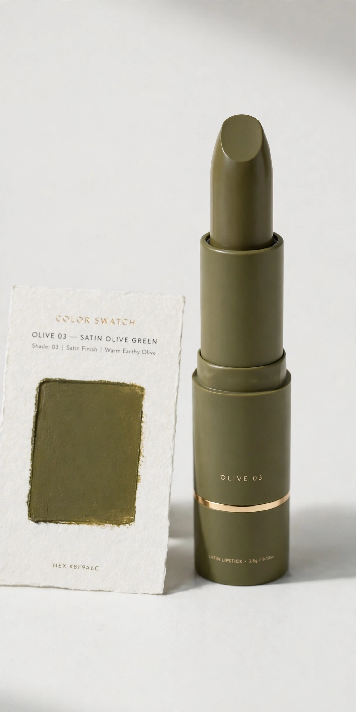

今日の色（占い）
オリーブのリップをひと塗り
色は、あなたの似合う範囲の中から選ばれています
似合う色の範囲は、人ごとに決まっています。パーソナルカラーは、その範囲の名前です。範囲の外の色は、どれだけ流行でも顔色を下げます。
開運色は、その範囲の中から選びます。世間のラッキーカラーをそのまま勧めると、似合わない色を着ることになりかねません。ここでは範囲の外の色は出しません。
だから出口は1つでいい。診断も運勢も、最後は「今日どの色を使うか」に重なります。タイプ名は、色の後ろについてくる説明です。
下はブルベ夏の範囲の例です。金の輪が付いた色が、今日の運勢で選ばれた1色。範囲そのものは診断で決まり、輪の位置は毎日変わります。
金の輪 = 今日の運勢（占い）。範囲 = 診断。2つは重なって初めて「今日の色」になります。
今日の色を見る 開いた瞬間に、その日の1色が出ています。
自分の範囲を知る 色の範囲（と骨格）は、下のモジュールで確かめます。
毎朝、輪が動く 範囲は変わらず、今日の1色だけが日替わりで変わります。
ここが診断モジュールです（方式は確定後に差し替える前提の置き場）。
パーソナルカラー
骨格タイプ
無料・登録不要。入力がサーバーへ送られることはありません。